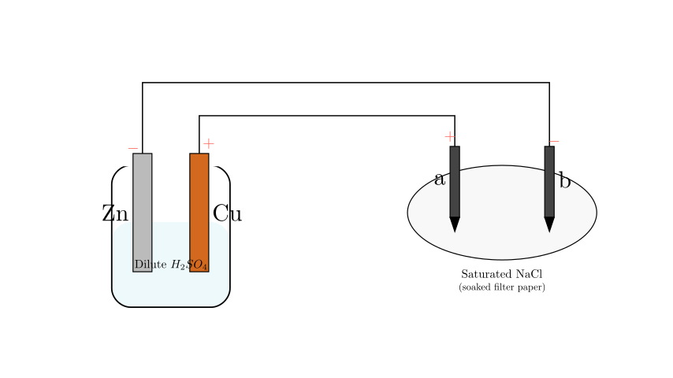
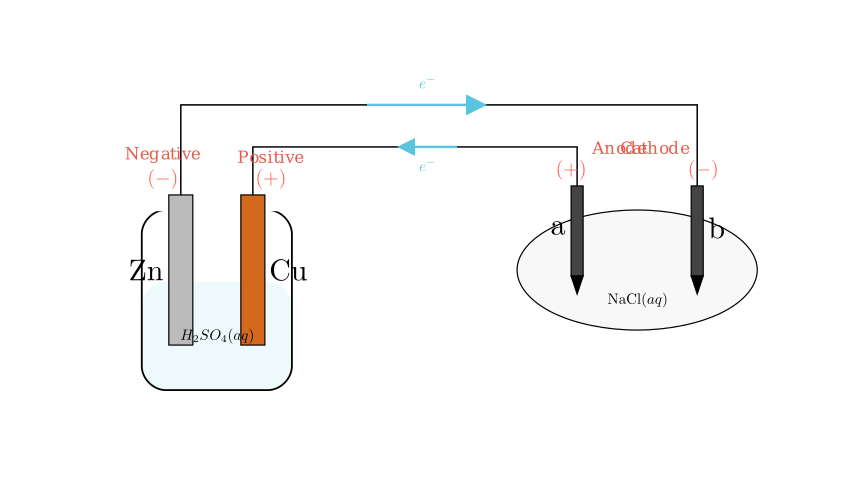
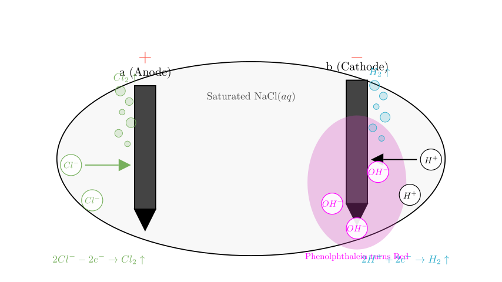
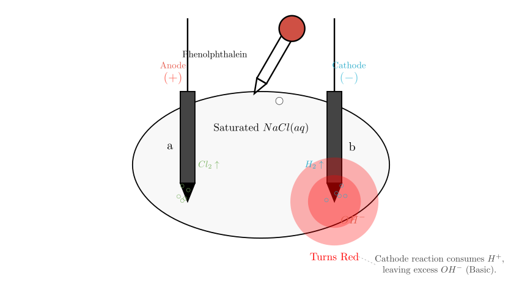

Problem Statement: As shown in the figure, a and b are two graphite rods. Which of the following statements is correct?
A. a is the anode, where oxidation occurs; Zinc is the negative electrode and is reduced. B. The direction of electron flow in the circuit is: Zinc $\rightarrow$ b $\rightarrow$ a $\rightarrow$ Copper. C. If 0.2 mol of electrons pass through the circuit, 2.24 L of gas is produced on the copper plate. D. If phenolphthalein is dripped onto the filter paper, the area near electrode b turns red.
Solution Approach: To solve this problem, we must first identify the type of electrochemical cells involved. The setup consists of two parts: 1. Left side: A beaker with Zinc and Copper electrodes in dilute sulfuric acid. This functions as a Galvanic Cell (Primary Battery) because it generates electricity through a spontaneous chemical reaction. 2. Right side: Graphite rods (a and b) on filter paper soaked in saturated saline (NaCl solution). This functions as an Electrolytic Cell driven by the battery on the left.
We will determine the polarity of the electrodes, trace the electron flow, and analyze the chemical reactions at each electrode.

Step 1: Analyzing the Galvanic Cell (Left Side)
In the beaker containing dilute sulfuric acid ($H_2SO_4$): * Zinc (Zn) is more reactive than Copper (Cu). * Therefore, Zn acts as the Negative Electrode (Anode of the battery). It loses electrons and dissolves: $$Zn - 2e^- \rightarrow Zn^{2+}$$ * Cu acts as the Positive Electrode (Cathode of the battery). Hydrogen ions ($H^+$) from the acid gain electrons here to form hydrogen gas: $$2H^+ + 2e^- \rightarrow H_2 \uparrow$$
Step 2: Determining Polarity of the Electrolytic Cell (Right Side)
We trace the connections to the graphite rods: * The Zn electrode (Negative) is connected to rod b. Therefore, b is the Cathode of the electrolytic cell. * The Cu electrode (Positive) is connected to rod a. Therefore, a is the Anode of the electrolytic cell.

Step 3: Analyzing the Reactions in the Electrolytic Cell
The filter paper contains saturated saline (NaCl solution), which contains $Na^+$, $Cl^-$, $H^+$, and $OH^-$ ions.
At Anode 'a' (connected to positive Cu): Negative ions move here. $Cl^-$ loses electrons (oxidation) more easily than $OH^-$. $$2Cl^- - 2e^- \rightarrow Cl_2 \uparrow$$ (Chlorine gas is produced).
At Cathode 'b' (connected to negative Zn): Positive ions move here. $H^+$ gains electrons (reduction) more easily than $Na^+$. $$2H^+ + 2e^- \rightarrow H_2 \uparrow$$ (Hydrogen gas is produced).
Crucial Consequence at Cathode 'b': As $H^+$ ions are consumed to form hydrogen gas, the equilibrium of water ($H_2O \rightleftharpoons H^+ + OH^-$) shifts. This leaves an excess of hydroxide ions ($OH^-$) near electrode b, making the solution locally alkaline (basic).

Step 4: Evaluating the Options
Let's check each statement against our analysis:
Incorrect.
B. "Electron flow: Zinc $\rightarrow$ b $\rightarrow$ a $\rightarrow$ Copper"
Incorrect.
C. "0.2 mol electrons... 2.24 L gas on Copper plate"
Likely Incorrect (due to missing conditions).
D. "Phenolphthalein... b turns red"

Conclusion:
Therefore, the correct statement is D.